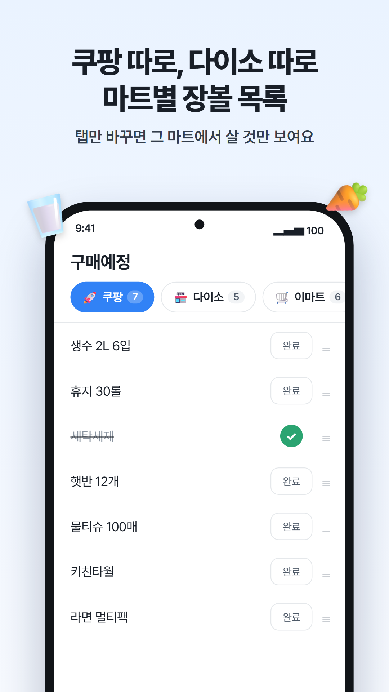
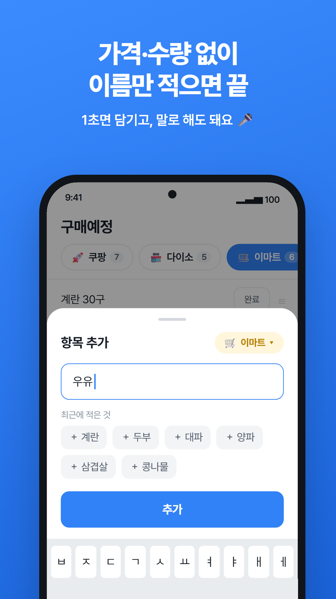
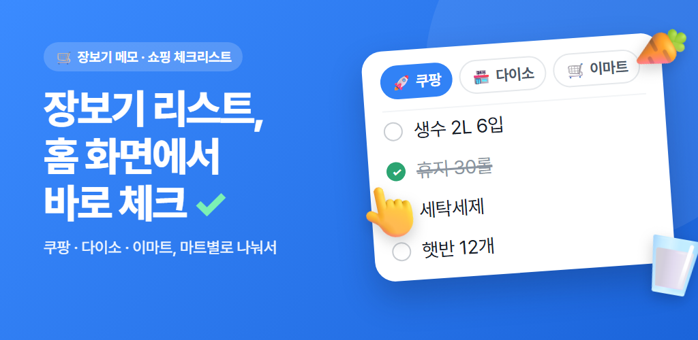

마트노트 1.6.0 업데이트 준비
"요리별 재료" 탭이 들어가는 업데이트예요. 스토어에 올릴 글·그림과 출시 전에 할 일을 한곳에 모았습니다. 글은 [복사]를 눌러 플레이 콘솔에 붙이면 돼요. 아직 정해 주셔야 할 것은 맨 아래 7번에 있어요.
1이번 업데이트에 들어가는 것
| 항목 | 내용 | 폰에서 확인 |
|---|---|---|
| 새 기능요리별 재료 탭 | 요리 296가지. 요리를 고르면 재료가 나오고, 누른 것만 고른 마트에 담아요. 아무것도 미리 골라져 있지 않고, 그 마트에 이미 있는 재료는 흐리게 막혀요. 양(그램·개수)은 없어요. | 화면 확인함 |
| 새 기능만드는 법 보기 | 요리 이름 아래 버튼. 영상 앱에서 "요리 이름 + 황금레시피"로 검색돼요. | 영상 앱 있는 폰만 확인 |
| 고침위젯 빈 곳 | 목록 위젯에 항목이 적을 때 빈 곳을 눌러도 앱이 열려요. | 아직 확인 못 함 |
| 고침위젯 (지난번 작업분) | 전체 위젯에서 살 게 없는 마트는 안 보여요. 다 비었을 때 "살 거 생각나면 여기 적어 두세요". 위젯은 2x2로 들어가고, 넣은 직후 "꾹 누르면 크기를 바꿀 수 있어요" 안내. | 지난번 확인분 |
| 신고 필요없는 요리 검색어 | 검색했는데 없는 요리 이름(글자만, 20자까지)을 통계로 받아요. 재료표를 늘리는 데 씁니다. → 5번 참고 | — |
버전은 1.6.0 (버전 코드 14)을 제안해요. 탭이 하나 새로 생기는 큰 변화라 1.5.2보다 1.6.0이 맞아요.
2스토어 글
바꿈앱 이름 (30자까지)
지금
마트노트 - 마트 장보기 메모, 쇼핑 체크리스트
제안
장보기 메모 - 마트노트: 마트별 쇼핑 리스트 위젯
왜 "장보기 메모"로 시작하나 11월 19일에 검색어 131개를 스토어에서 확인했어요(전체 표). "장보기 메모"를 검색하면 1·2위가 이름이 "장보기 메모"로 시작하는 앱 두 개뿐이고, 1위는 설치 930짜리예요. 3위부터는 컬러노트 같은 일반 메모 앱입니다. 이름이 이 말로 시작하는 앱이 둘밖에 없어서, 우리가 세 번째로 들어갈 자리가 비어 있어요. 2위 앱은 광고 없이 9년간 9만 8천 설치를 모았으니 찾는 사람도 있는 말입니다.
나머지 단어 "리스트", "쇼핑", "위젯"을 넣어 "장보기 리스트", "쇼핑 리스트", "장보기 위젯" 조합에 걸리게 했어요. 설치 100짜리 새 앱도 이름에 이런 단어가 있으면 "장보기 리스트" 8위에 나옵니다. "마트노트"는 이름에 남아서 직접 치고 오는 분은 그대로 찾아요. 폰 홈 화면의 앱 이름은 "마트노트" 그대로예요.
잃는 것 지금 1위인 "마트 메모", "마트 체크리스트" 등이 내려갈 수 있어요. 다만 그 다섯 개를 갖고도 두 달 설치가 70이라, 사람이 거의 안 들어오는 자리입니다.
바꿈짧은 설명 (80자까지)
지금
나에게 보내기에 묻히던 장보기 메모, 마트별 쇼핑 리스트로. 홈 화면 위젯에서 보고 바로 체크.
제안
묻히던 장보기 메모를 마트별 장보기 목록·쇼핑 리스트로. 위젯에서 바로 체크, 요리만 고르면 살 재료까지.
앞의 두 문장(묻히던 메모 → 마트별, 위젯 체크)은 지금 순서 그대로 두고 끝에 새 기능만 붙였어요. 검색어 "장보기 메모", "쇼핑 리스트", "위젯"은 그대로 살아 있고 "요리", "재료"가 추가됩니다.
바꿈자세한 설명 (4000자까지)
🛒 나에게 보내기로 장보기 보내뒀다가, 다른 글에 묻혀서 못 찾은 적 있죠?
"우유, 계란, 휴지…" 적어두고 마트에 갔는데
링크, 사진, 다른 메모 사이에서 한참 스크롤하고 계셨다면,
마트노트를 써 보세요. 장보기만 따로, 홈 화면 위젯에 늘 보여요.
쿠팡에서 살 것, 다이소에서 살 것, 이마트에서 살 것…
한 리스트에 다 적으면 마트에서 헷갈리시죠?
마트노트는 마트별로 리스트를 따로 만들어요.
탭 하나로 마트를 바꾸고, 그 마트에서 살 것만 깔끔하게 봅니다.
━━━━━━━━━━━━━━━
🍲 김치찌개에 뭘 넣더라? NEW
━━━━━━━━━━━━━━━
마트에서 "오늘 김치찌개나 끓일까" 했는데 뭘 사야 할지 가물가물할 때,
요리 이름만 고르세요. 살 재료가 쭉 나와요.
필요한 것만 눌러서 마트 목록에 담으면 끝.
이미 적어 둔 재료는 알아서 표시해 줘요.
찌개·국, 반찬, 김밥·떡볶이 재료부터
김장 준비물, 차례상 장보기, 캠핑 준비물 체크리스트, 소풍 도시락까지 약 300가지.
만드는 법이 궁금하면 버튼 하나로 요리 영상을 바로 찾아줘요.
━━━━━━━━━━━━━━━
✨ 이런 분께 딱이에요
━━━━━━━━━━━━━━━
• 여러 마트를 돌며 장 보는 분
• 나에게 보내기·메모장에 장보기를 적던 분
• 마트에만 가면 뭘 사려고 했는지 잊는 분
• 생필품 리스트, 장바구니 리스트를 간단히 적고 싶은 분
• 복잡한 가계부 말고, 딱 "살 것"만 적고 싶은 분
━━━━━━━━━━━━━━━
🎯 마트노트의 5가지 특징
━━━━━━━━━━━━━━━
1) 마트별 분리 리스트
쿠팡·다이소·이마트·홈플러스·마켓컬리… 원하는 만큼 마트를 추가하고
마트마다 색으로 구분해 한눈에 정리합니다.
2) 홈 화면 위젯 — 보고, 바로 체크
목록 위젯: 살 것이 홈 화면에 그대로. 동그라미를 누르면
앱을 열지 않아도 바로 체크돼요. 전체 마트를 이어서 보거나
한 마트만 골라 둘 수 있고, 스크롤도 돼요.
개수 위젯: 마트별로 몇 개 남았는지만 작게.
3) 요리별 재료 NEW
요리를 고르면 살 재료가 나오고, 누른 것만 담겨요.
가격·그램 같은 건 없어요. 얼마나 살지는 내가 정하니까요.
4) 쇼핑 앱 바로가기 🔍
적어둔 항목 옆 돋보기를 누르면 그 마트의 쇼핑 앱에서 바로 검색돼요.
쿠팡·마켓컬리·11번가·옥션·테무는 검색 결과까지 한 번에,
홈플러스·SSG·G마켓·이마트·다이소몰 등도 마트 이름에 맞춰 연결해요.
5) 1초 추가, 1초 체크
가격·수량·메모 입력 없이 이름만 적으면 끝.
다 산 항목은 가볍게 체크해 깔끔하게 정리됩니다.
━━━━━━━━━━━━━━━
🔗 가족과 목록 주고받기
━━━━━━━━━━━━━━━
공유 버튼 하나로 목록을 메신저로 보내요.
받은 사람이 링크를 누르면 마트노트에 바로 담겨요.
마트노트가 없으면 설치 화면으로, 아이폰이면 목록만 보여줘요.
━━━━━━━━━━━━━━━
🎤 말로도 추가돼요
━━━━━━━━━━━━━━━
타이핑이 번거로울 땐 음성추가 버튼을 누르고 말하세요.
"라면" 한마디면 바로 담깁니다.
🔔 깜빡 방지 알림
"이건 꼭 사야지" 싶은 항목엔 알림을 설정해 두세요.
정한 시간에 한 번 알려드려요.
🌙 다크 모드
밤에도 눈이 편하게, 다크 모드를 지원합니다.
━━━━━━━━━━━━━━━
초간단하게, 딱 필요한 것만.
마트별 장보기 리스트, 쇼핑 체크리스트, 요리 재료까지 마트노트 하나로.
바뀐 곳 ① 첫 화면 소개 바로 아래에 "김치찌개에 뭘 넣더라?" 단락을 새로 넣었어요. ② "4가지 특징"을 5가지로 늘리고, 위젯을 2번으로 올렸어요(스크린샷 순서와 맞춤). ③ 예전 기능에 붙어 있던 NEW는 떼고 새 기능에만 남겼어요. ④ "이런 분께"에 "마트에만 가면 잊는 분" 한 줄. ⑤ 지금은 설명에서 빼기로 한 "공유 → 마트노트로 옮기기" 문장을 지웠어요.
영상 서비스 이름(유튜브)은 일부러 안 썼어요. 다른 회사 상표를 스토어 글에 쓰면 정책 위반으로 걸릴 수 있어서, "나에게 보내기"처럼 "요리 영상"이라고만 적었습니다.
새로출시 노트 (500자까지)
🍲 요리별 재료 (새 탭)
마트에서 "김치찌개에 뭘 넣더라?" 싶을 때 요리 이름만 고르세요.
살 재료가 나오고, 필요한 것만 눌러 마트 목록에 담아요.
찌개·반찬·김밥부터 김장·차례상·캠핑까지 약 300가지.
만드는 법 영상도 버튼 하나로 볼 수 있어요.
👆 위젯 빈 곳을 눌러도 앱이 열려요
적어 둔 게 적을 때 위젯 빈 자리를 눌러도 반응이 없던 걸 고쳤어요.
🧩 위젯이 더 깔끔해졌어요
살 게 없는 마트는 위젯에서 빠져요. 위젯은 작게 들어가고, 꾹 눌러 크기를 바꿀 수 있어요.
3스크린샷
지금 6장에 "요리별 재료" 1장을 4번째로 넣어 7장으로 하는 걸 제안해요. (최대 8장)

1. 묻힌 메모
01_memo_lost.png · 그대로

2. 위젯 체크
02_widget_check.png · 그대로

3. 마트별
03_by_mart.png · 그대로

4. 요리별 재료 새로
04_recipe.png

5. 이름만
05_name_only.png · 그대로

6. 쇼핑앱 검색
06_shop_search.png · 그대로

7. 가족 링크
07_family_link.png · 그대로

대표 그래픽
feature_graphic_1024x500.png · 그대로
파일 위치: C:\마트노트\docs\playstore_assets\v7_store\ (7장 + 대표 그래픽, 번호 순서대로 올리면 돼요)
왜 4번째인가 스토어에서는 앞의 3장이 스크롤 없이 보여요. 그 3장(문제 → 위젯으로 해결 → 마트별)은 앱을 고르는 이유라 건드리지 않았어요. 새 기능은 그 바로 다음에 둬서, 넘겨 본 사람이 "이것도 되네" 하고 보게 했습니다. "이름만"과 "쇼핑앱 검색"보다는 눈길을 끄는 내용이라 그 앞에 뒀어요.
문구 큰 글씨 "김치찌개에 뭘 넣더라?"는 말씀하신 장면 그대로예요. 작은 글씨 "요리만 고르면 살 재료가 나와요"가 그 답입니다. 폰은 한 대만 넣었어요.
대표 그래픽은 그대로 "장보기 리스트, 홈 화면에서 바로 체크"가 앱의 첫인상이에요. 요리 기능을 앞세우면 요리 앱처럼 보여서, 이번에는 바꾸지 않는 걸 권해요.
1~3, 5~7번은 지난번(11월 17일)에 만든 그림 그대로예요. 그때 고친 2번 "이제 찾지 마세요"와 대표 그래픽을 아직 콘솔에 안 올리셨다면, 이번에 7장을 한 번에 갈아 끼우면 됩니다.
4온보딩 (처음 켰을 때 넘겨 보는 화면)
바꿈3번째 장을 "요리별 재료"로 교체했어요. 장수는 4장 그대로예요.
| 순서 | 큰 글씨 | 작은 글씨 | |
|---|---|---|---|
| 1 | 마트별로 따로 정리하세요 | 쿠팡, 다이소 따로따로, 어디 가서도 헷갈리지 않게 | 그대로 |
| 2 | 이름만 적으면 끝나요 | 가격도 수량도 필요 없어요. 빠르고 심플하게! | 그대로 |
| 3 | 요리만 고르면 살 재료가 나와요 | "김치찌개에 뭘 넣더라?" 싶을 때, 필요한 것만 눌러 담으세요 | 새로 |
| 4 | 홈 화면에서 보고, 바로 체크 | 위젯에서 동그라미만 누르면 앱을 안 열어도 체크돼요 | 그대로 |
왜 3번째를 바꿨나 스토어 스크린샷에 요리별 재료가 들어가니, 깔고 처음 보는 설명에도 있어야 얘기가 이어져요. 빠진 "쇼핑 앱에서 검색" 장은 목록에서 돋보기를 처음 볼 때 안내가 따로 한 번 떠서, 온보딩에 없어도 알게 됩니다. 마지막 장이 가장 중요한 "위젯 추가"라 장수는 늘리지 않았어요.
새 장의 그림은 폰에서 실제 김치찌개 화면(재료 3개를 고른 상태)을 찍어 넣었어요. 광고는 안 보이는 화면이에요.
추가이미 쓰는 분들에게 알리기
업데이트한 분들은 온보딩을 다시 안 봐요. 그래서 "요리별 재료" 탭 아이콘에 작은 파란 점을 붙였고, 한 번 눌러 보면 사라집니다.
5꼭 해야 하는 신고 출시 전 필수
없는 요리 검색어를 통계로 받기 시작하므로, 구글에 알린 내용과 실제가 같아야 해요. 안 하고 올리면 정책 위반이 됩니다. (지난번 개인정보처리방침 주소 문제로 거부됐던 것과 같은 종류예요.)
① 개인정보처리방침에 한 단락 추가 — 제가 합니다
요리별 재료 화면에서 검색한 요리가 목록에 없을 때, 그 검색어(글자만, 최대 20자)를 Google Firebase Analytics로 수집합니다. 요리 목록을 늘리는 데만 쓰며, 이름·연락처 등 개인을 알아볼 수 있는 정보와 연결하지 않습니다.
② 플레이 콘솔 "데이터 보안" 고치기 — 직접 하셔야 해요
- 플레이 콘솔 → 마트노트 → 왼쪽 맨 아래 정책 및 프로그램 → 앱 콘텐츠 → 데이터 보안 → 관리
- "데이터 유형" 단계에서 앱 활동 → 인앱 검색 기록에 체크
- 그 항목의 질문: 수집됨 예 / 공유됨 아니요 / 일시적으로만 처리 아니요 / 사용자가 선택 가능 아니요(필수) / 목적 분석
- 저장 → 검토에 전송 (앱 업데이트와 같이 보내면 돼요)
메뉴 이름은 콘솔이 바뀌면 조금 다를 수 있어요. 막히면 화면을 붙여 주세요.
③ 같이 확인할 것
- 앱 카테고리: 지난번에 "라이프스타일 → 쇼핑"으로 바꾸기로 했어요. 아직이면 이번에 같이 바꿔 주세요. (스토어 설정 → 앱 카테고리)
6출시까지 순서
제가 할 일
- 요리별 재료 탭 만들기, 재료표 296개 (검수 3번)
- 위젯 빈 곳 눌러 앱 열기
- 스토어 글 초안, 새 스크린샷 1장
- 폰에서 최종 확인 (아래 "아직 못 본 것")
- 버전을 1.6.0으로 올리고, 변경 기록 정리, 커밋
- 개인정보처리방침 문구 추가 (말씀드리고)
- 올릴 파일(AAB) 만들기 + 출시 자료 폴더 정리
직접 하실 일
- 이 페이지의 글과 그림 확인 (7번의 물음에 답)
- 폰에서 써 보기
- 플레이 콘솔: 새 버전 만들기 → 파일 올리기 → 출시 노트 붙이기
- 플레이 콘솔: 짧은 설명·자세한 설명 바꾸기, 스크린샷 7장으로 교체
- 플레이 콘솔: 데이터 보안 고치기 (5번 ②), 카테고리 확인
아직 폰에서 못 본 것
- 위젯 빈 곳을 누르면 앱이 열리는지, 위젯 크기를 바꿔도 안 깨지는지, 항목이 많을 때 스크롤이 되는지
- 재료를 담은 직후 위젯과 구매예정 탭에 바로 보이는지
- 마트가 7개 이상일 때 "+2"를 눌러 펼치고 접는 동작
- 다크 모드에서 요리별 재료 화면이 잘 보이는지
- 폰 글씨를 크게 했을 때 탭 이름 "요리별 재료"가 안 잘리는지
7정해 주실 것
| # | 물음 | 제 추천 |
|---|---|---|
| 0 | 앱 이름을 "장보기 메모 - 마트노트: 마트별 쇼핑 리스트 위젯"으로 바꿀까요? | 확정 (11월 19일). 3주 뒤 "장보기 메모" 3위 안에 드는지로 판단해요. |
| 1 | 짧은 설명을 제안대로 바꿀까요? | 바꾸기. "장보기 목록", "쇼핑 리스트", "요리·재료"가 들어가요. |
| 2 | 새 스크린샷을 4번째에 넣을까요? | 4번째. 앞 3장은 그대로 지키고요. |
| 3 | 온보딩과 "새 기능" 점 | 확정 (11월 19일). 온보딩 3번째 장을 요리별 재료로 교체, 탭에 점 추가. |
| 4 | 버전을 1.6.0으로 할까요? | 1.6.0 |
| 5 | 재료 옆 "다이소에도 있음" 글씨는 그대로 둘까요? | 일단 그대로. 써 보시고 거슬리면 빼요. |
답을 주시면 남은 일(점 넣기, 버전 올리기, 커밋, 올릴 파일 만들기)을 이어서 하겠습니다.